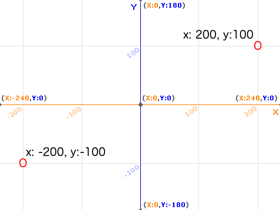
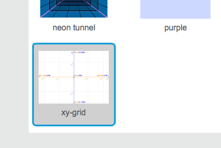
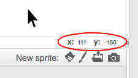

In Scratch, the coordinates x:0, y:0 mark the central position on the Stage.
A position like x:-200, y:-100 is towards the bottom left on the Stage, and a position like x:200, y:100 is near the top right.

You can see this for yourself by adding the xy-grid backdrop to your project.

To find out coordinates of a specific position, move your mouse pointer to it and check the readings below the bottom right corner of the Stage.
